| 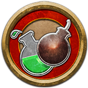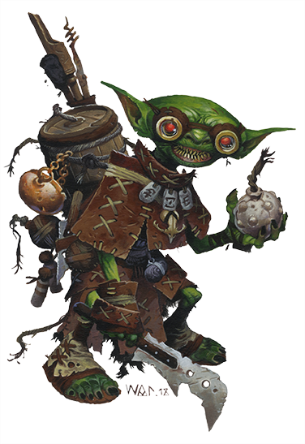
Alchimiste : Il n'y a pas de spectacle plus beau pour vous qu'un étrange breuvage bouillonnant dans un gobelet, et vous consommez vos élixirs ingénieux avec abandon. Vous êtes fasciné par la découverte des secrets de la science et du monde naturel, et vous expérimentez constamment dans votre laboratoire ou en déplacement avec des concoctions inventives pour chaque éventualité. Vous êtes intrépide face au risque, lançant des créations explosives ou toxiques sur vos ennemis. Votre chemin unique vers la grandeur est bordé de breuvages alchimiques qui poussent votre esprit et votre corps à leurs limites. |
| 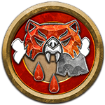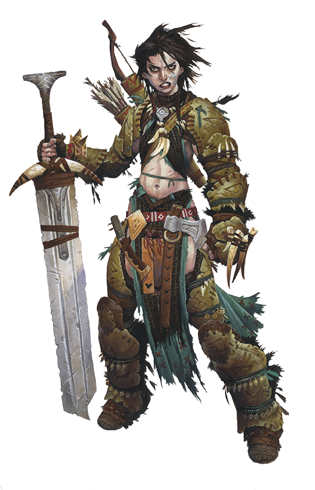
Barbare : La rage vous consume au combat. Vous aimez faire des ravages et utiliser des armes puissantes pour tailler vos ennemis, en vous appuyant sur une durabilité étonnante sans avoir besoin de techniques compliquées ou d'un entraînement rigide. Vos rages puisent dans un instinct vicieux, que vous pourriez associer à un animal, un esprit ou une partie de vous-même. Pour de nombreux barbares, la force brute est un marteau et chaque problème ressemble à un clou, tandis que d'autres essaient de retenir la tempête d'émotions en eux et de ne libérer leur rage que lorsque cela compte le plus. |
| 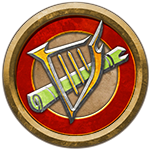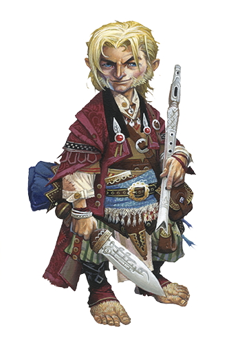
Barde : Vous êtes un maître de l'art, un érudit des secrets cachés et un persuasif captivant. En utilisant des performances puissantes, vous influencez les esprits et élevez les âmes à de nouveaux niveaux d'héroïsme. Vous pourriez utiliser vos pouvoirs pour devenir un leader charismatique, ou peut-être pourriez-vous plutôt être un conseiller, un manipulateur, un érudit, un scélérat ou un virtuose. Bien que votre polyvalence amène certains à vous considérer comme un vaurien séduisant et un touche-à-tout, il est dangereux de vous rejeter comme un maître de rien. |
| 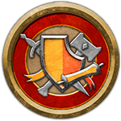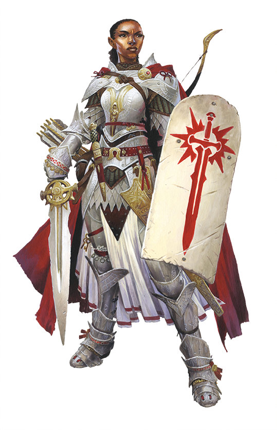
Champion : Vous êtes un émissaire d'une divinité, un serviteur dévoué qui a endossé un lourd manteau, et vous adhérez à un code qui vous sépare de ceux qui vous entourent. Bien que des champions existent pour chaque alignement, en tant que champion du bien, vous apportez certitude et espoir aux innocents. Vous avez de puissantes défenses que vous partagez librement avec vos alliés et des passants innocents, ainsi qu'un pouvoir sacré que vous utilisez pour mettre fin à la menace du mal. Votre dévotion attire même l'attention des esprits saints qui vous aident dans votre cheminement. |
| 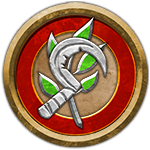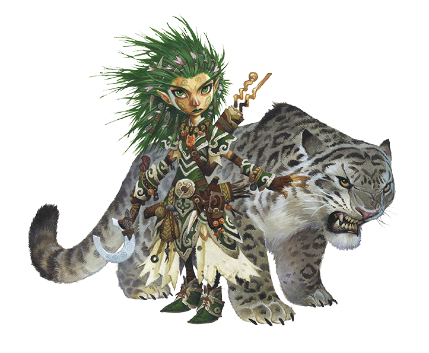
Druide : Il est impossible de résister au pouvoir de la nature. Il peut anéantir la forteresse la plus solide en quelques minutes, réduisant même les ouvrages les plus puissants en décombres, les réduisant en cendres, les enterrant sous une avalanche de neige ou les noyant sous les vagues. Il peut offrir une générosité sans fin et une splendeur à couper le souffle à ceux qui le respectent - et une mort atroce à ceux qui le prennent trop à la légère. Vous faites partie de ceux qui entendent l'appel de la nature. Vous êtes impressionné par la majesté de sa puissance et vous vous abandonnez à son service. |
| 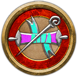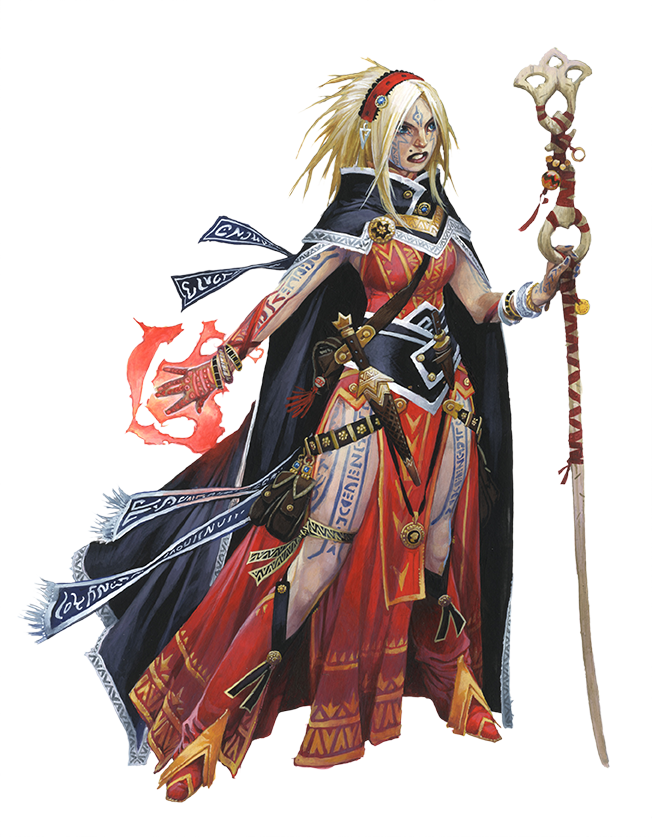
Ensorceleur : Vous n'avez pas choisi de devenir un lanceur de sorts, vous êtes né un. Il y a de la magie dans votre sang, qu'une divinité ait touché l'un de vos ancêtres, qu'un ancêtre ait communié avec une créature primale ou qu'un puissant rituel occulte ait influencé votre lignée. L'auto-réflexion et l'étude vous permettent d'affiner vos compétences magiques inhérentes et de débloquer de nouvelles capacités plus puissantes. Le pouvoir dans votre sang comporte cependant un risque et vous êtes constamment confronté au choix de devenir un maître lanceur de sorts ou de tomber dans la destruction. |
| 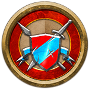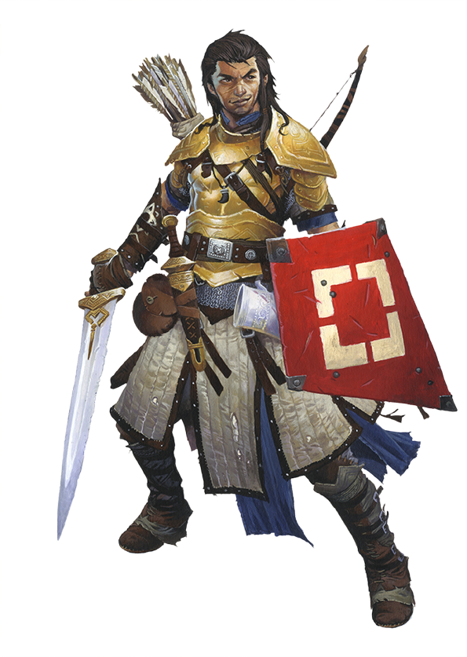
Guerrier: Combattant pour l'honneur, la cupidité, la loyauté ou simplement le frisson de la bataille, vous êtes un maître incontesté de l'armement et des techniques de combat. Vous combinez vos actions grâce à des combinaisons intelligentes de mouvements d'ouverture, de frappes finales et de contre-attaques chaque fois que vos ennemis sont assez imprudents pour baisser leur garde. Que vous soyez un chevalier, un mercenaire, un tireur d'élite ou un maître des lames, vous avez perfectionné vos compétences martiales en une forme d'art et effectuez des attaques critiques dévastatrices sur vos ennemis. |
| 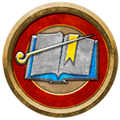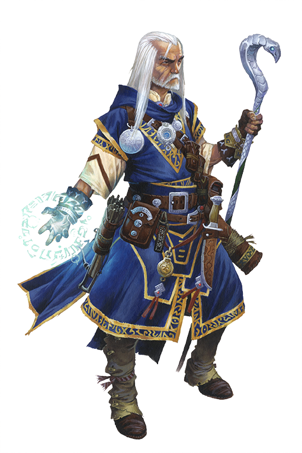
Magicien : Vous êtes un éternel étudiant des arcanes secrets de l'univers, utilisant votre maîtrise de la magie pour lancer des sorts puissants et dévastateurs. Vous traitez la magie comme une science, en croisant les derniers textes sur la pratique de la magie avec d'anciens tomes ésotériques pour découvrir et comprendre le fonctionnement de la magie. Pourtant, la théorie magique est vaste et il n'y a aucun moyen de tout étudier. Soit vous vous spécialisez dans l'une des huit écoles de magie, acquérant une compréhension plus approfondie des nuances de ces sorts par-dessus tout, soit vous privilégiez une approche plus large qui met l'accent sur la façon dont toute la magie se combine au détriment de la profondeur. |
| 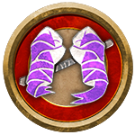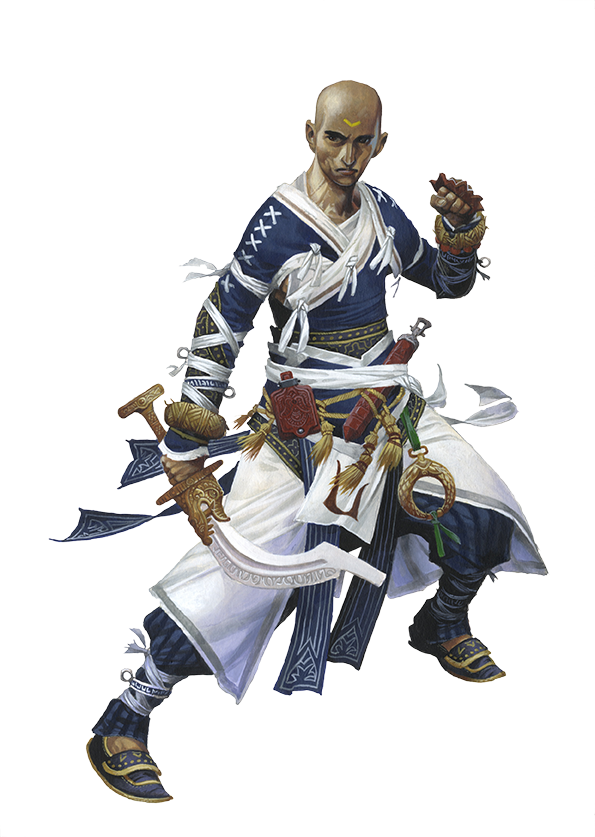
Moine : La force de votre poing découle de votre mental et de votre esprit. Vous recherchez la perfection, transformant votre corps en un instrument sans faille et votre esprit en un bastion ordonné de sagesse. Vous êtes un combattant féroce réputé pour ses compétences en arts martiaux et ses positions de combat qui vous confèrent des mouvements de combat uniques. Alors que le défi de maîtriser de nombreux styles de combat vous pousse vers de grands sommets, vous aimez également méditer sur des questions philosophiques et découvrir de nouvelles façons d'obtenir la paix et l'illumination. |

Prêtre : Les divinités exercent leur volonté sur le monde de manière infinie, et vous êtes l'un de leurs serviteurs mortels les plus fidèles. Bénéficiant de la magie divine, vous vivez les idéaux de votre foi, vous parez des symboles de votre église et vous entraînez assidûment à manier l'arme préférée de votre divinité. Vos sorts peuvent protéger et soigner vos alliés, ou ils peuvent punir les ennemis et les ennemis de votre foi, comme le veut votre divinité. Vôtre est une vie de dévotion, répandant les enseignements de votre foi à la fois par la parole et par l'action. |
| 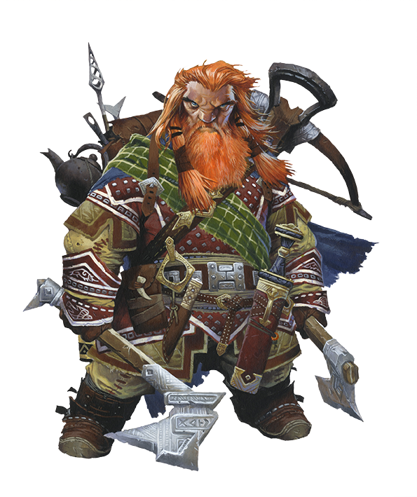
Rôdeur : Certains rôdeurs pensent que la civilisation épuise l'âme, mais qu'il faut quand même la protéger des créatures sauvages. D'autres disent que la nature doit être protégée des cupides, qui souhaitent apprivoiser sa beauté et piller ses trésors. Vous pouvez défendre l'un ou l'autre des buts, ou les deux. Vous pourriez être un éclaireur, un traqueur ou un chasseur de fugitifs ou de bêtes, hantant les confins de la civilisation ou explorant la nature sauvage. Vous savez comment vivre de la terre et êtes doué pour repérer et abattre à la fois des proies opportunes et des ennemis détestés. |
| 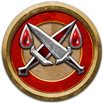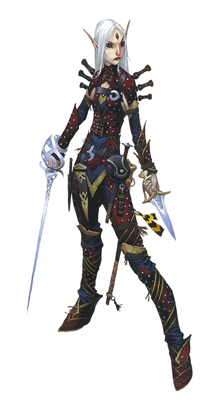
Roublard : Vous êtes habile et opportuniste. Grâce à votre esprit vif et à vos réactions rapides, vous profitez des faux pas de vos adversaires et frappez là où ça fait le plus mal. Vous jouez à un jeu dangereux, recherchez des sensations fortes et testez vos compétences, et vous ne vous souciez probablement pas beaucoup des lois qui vous gênent. Alors que le chemin de chaque voleur est unique et semé de dangers, la seule chose que vous partagez tous en commun est l'étendue et la profondeur de vos compétences. |